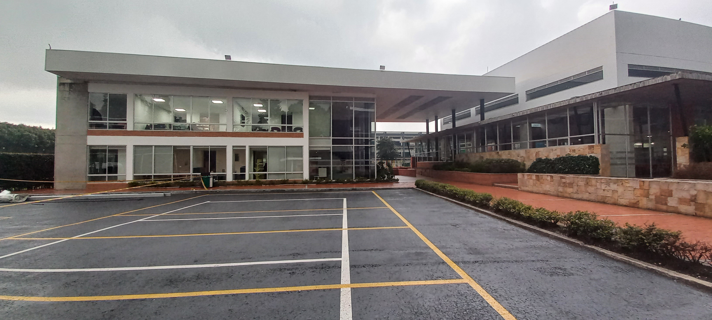
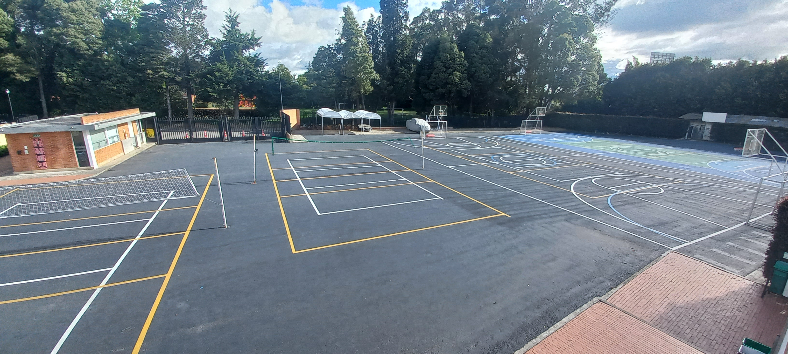
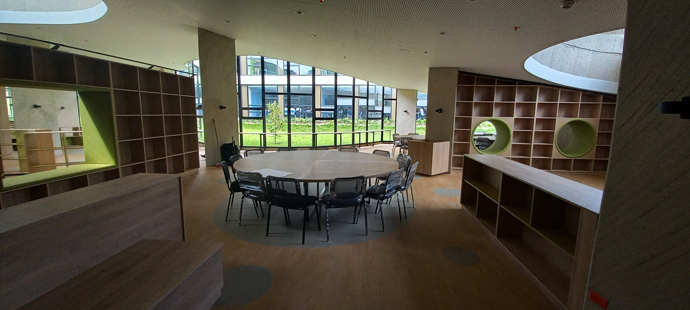
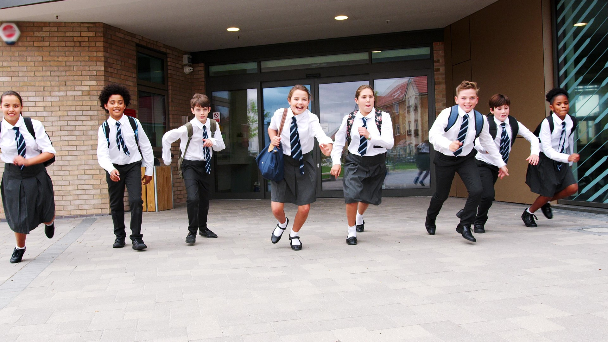

.png)
Aprender idiomas para un
Elegir colegio no es solo pensar en materias, es pensar en cómo se forma un ciudadano global. En el Gimnasio El Hontanar, el multilingüismo más que un complemento, es parte del ADN del proyecto educativo.
En nuestro colegio, el inglés se vive todos los días: más horas en inglés, más experiencias reales. Todos los estudiantes reciben clases en inglés y en español, con Cambridge English Language Assessment como referente internacional y certificaciones vigentes cada año.
✓ Cambridge English Assessment
✓ Certificaciones Anuales Cambridge
Inglés desde Preescolar
Desde preescolar, el inglés se vive en el aula de manera natural y progresiva: más horas en inglés, más experiencias reales todos los días.

Docentes Nativos
La clave está en el equipo docente: profesores apasionados y nativos altamente calificados, que garantizan una experiencia auténtica y una inmersión completa.

Certificación Cambridge
Los resultados hablan por sí solos: el 100% de nuestros estudiantes obtiene la certificación Cambridge, alcanzando niveles C1 y C2 en inglés.

Francés en Media y Alta
Desde sexto hasta once, los estudiantes también aprenden francés (alcanzando nivel B1), y cuentan con portugués como lengua electiva.

Literatura y Cultura
Nos nutrimos de dos grandes currículos internacionales, el de Estados Unidos y el de Inglaterra, para formar estudiantes con pensamiento crítico y visión global.

Expresión Multilingüe
El éxito está en formar estudiantes capaces de comunicarse con seguridad en la vida real, permitiendo obtener el mejor futuro sin límites.


Intercambio cultural con más de siete países:
somos un colegio en Bogotá que prepara para la vida real en inglés
Aprender idiomas requiere conocer el mundo desde el colegio. Por eso, El Hontanar desarrolla intercambios virtuales con más de siete países, donde los estudiantes trabajan proyectos comunes, interactúan con otras culturas y presentan resultados finales en inglés.
Proyectos colaborativos con estudiantes de otros países
Presentaciones y evaluaciones en inglés
Experiencia desde escuela media hasta bachillerato
El aprendizaje del idioma inicia desde preescolar
Se fortalece en el programa IB
Aquí el multilingüismo no se promete: se practica, se evalúa y se demuestra.


.png)
.jpg)